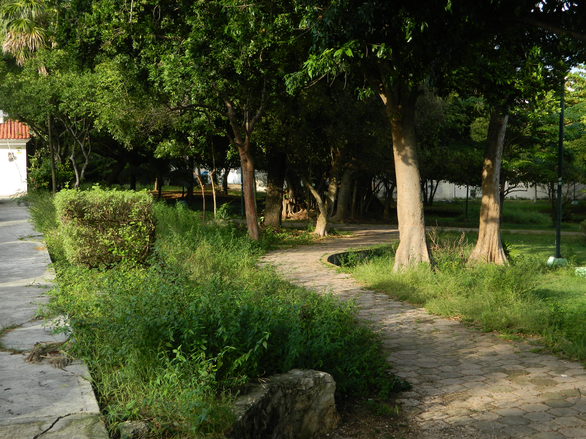
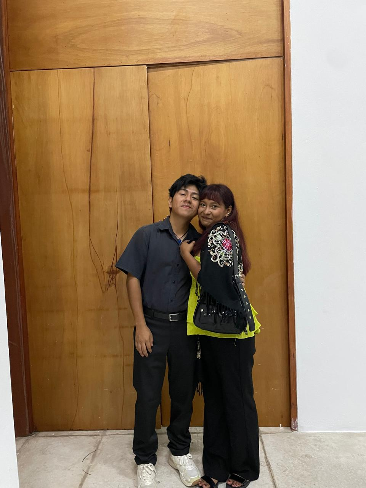
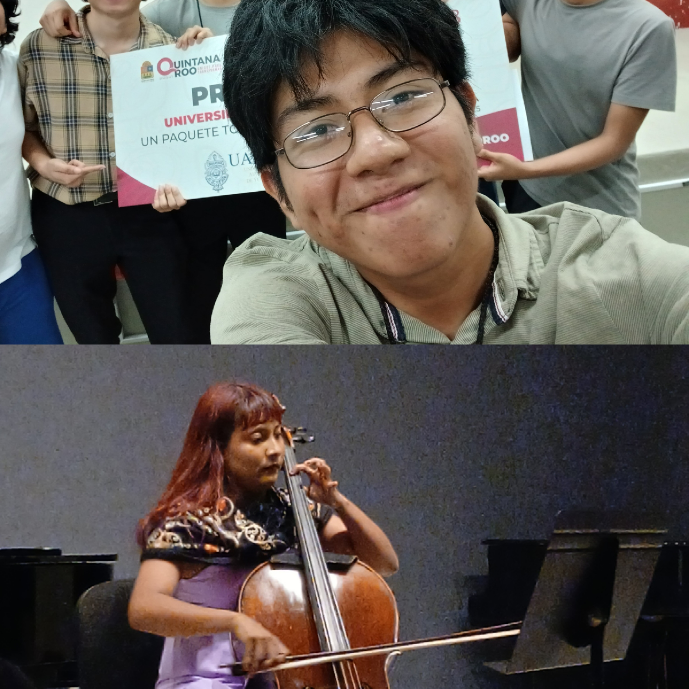
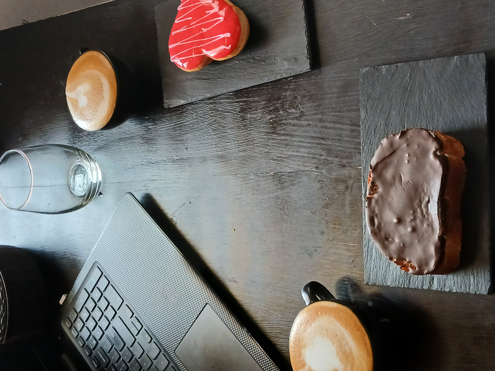
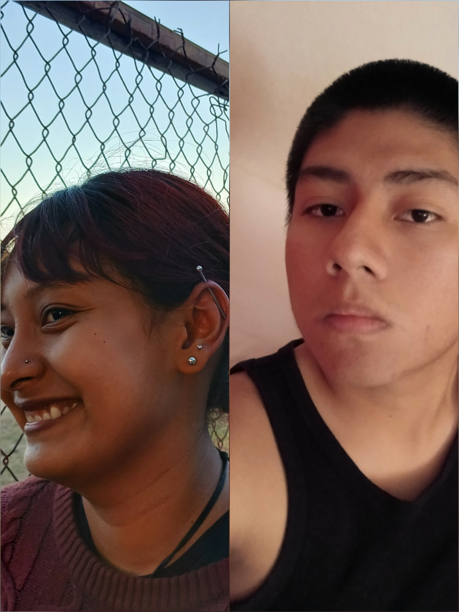
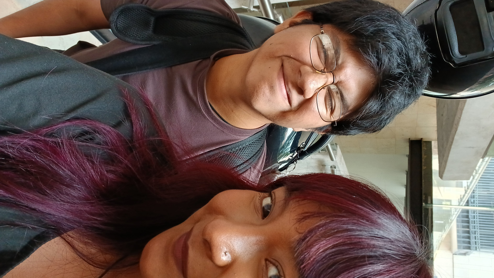

Desde que nos conocimos en secundaria, ambos sabiamos que habia algo especial en la mirada del otro. Interes, respeto, admiracion. Despues, fue amor.
Hasta el dia de hoy, ese sentir continua. Amplificado, es mas fuerte y profundo en nuestras almas. Hoy celebramos ese vinculo.
"Eres mi amistad, cariño y amor mas grande"

El primer parque que recorrimos juntos
Todo comenzó con una platica inocente, parques de aura intima, y nuestra insignia, lluvia estacional.
Continuar ↓
Nos empapamos ese dia.
Despues de conocernos, todo fue natural. Entraste en mi vida como si siempre hubieras pertenecido. Y es que estabamos destinados.
Continuar ↓
Siempre me divierto contigo.
El primer año fue maravilloso. Mientras mas te veia, mas me enamoraba de ti. Nos divertimos mucho y nos amamos mas.
Continuar ↓
El spot.
En el siguiente año acercamos el cielo a la tierra. Nos conocimos mas intimamente, y adoré ver los detalles de tu vida. Fue una etapa de cambios, pero para nuestro amor fue de crecimiento.
Continuar ↓
Extraño cada salida contigo.
Entonces llegamos a este año. Hicimos tantas cosas que muchas fechas se sienten lejanas. Sin embargo, por el contrario, me siento más cercano a ti.
Continuar ↓
Tantas veladas de musica y amor.
Cada quien ha tenidos sus exitos y desarrollo personales. Nos hemos acompañado en cada uno.
Continuar ↓
Celebramos mucho <3
Este año consolidamos la rutina de nuestro nidito de amor. Mañanas acompañadas de cafe y pan, cariño y ternura.
Continuar ↓
Tu amor sabe a pancito.
Nos vimos reinventarnos a nosotros mismos varias veces, y con cada una, te hacias mas hermosa.
Continuar ↓
Uno de tus mejores piercings.
Son tantos recuerdos que no podria ponerlos todos aqui. Vivimos mucho amor juntos. Al mismo tiempo, nuestra relacion maduraba y enraizaba mas en nuestros seres.
Continuar ↓
Ame cada concierto que diste.
Establecimos que minimo estaremos juntos 80 años. Estos tres años apenas son el 2.4%. Imagina todo lo que nos falta. Y aun asi, ya construimos un mundo al rededor nuestro. Gracias. Gracias amor por todo tu cariño. Por soportarme. Por las risas y las sorpresas.
Este año, te ame mucho. Y te seguire amando los siguientes.
"Te amo mi corachon ❤️"